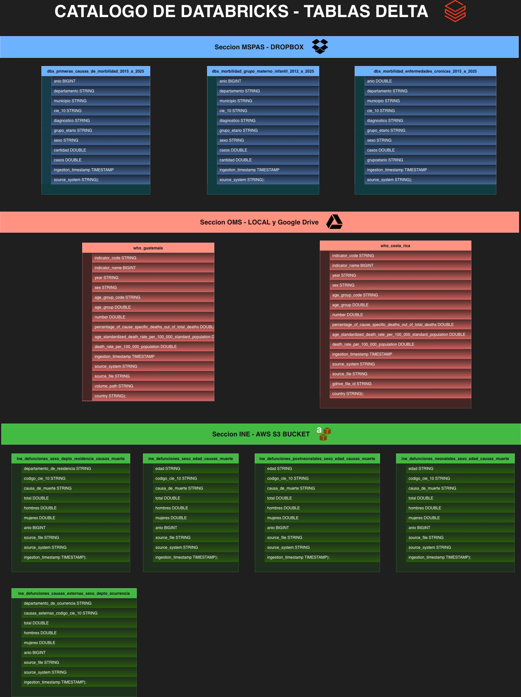

Diccionario de Datos y Metadatos¶
Conforme a los lineamientos de la Fase 1, se constituye el diccionario de datos y metadatos para la capa bronze, la cual actúa como una zona de aterrizaje inmutable. Los datos alojados en el esquema ss2_dw_workspace.sandbox_bronze_ss2 preservan el nivel de granularidad original y representan una copia fiel de las fuentes heterogéneas, sin haber sido sometidos a transformaciones destructivas. Las estructuras de datos aquí documentadas servirán como materia prima (en estado crudo) para los procesos ETL/ELT que se llevarán a cabo posteriormente.
Metadatos de Auditoría y Linaje¶
Como parte de las mejores prácticas de gobernanza de datos y rastreabilidad, todas las tablas en la capa Sandbox incluyen metadatos inyectados programáticamente durante el proceso de ingesta. Estos campos no pertenecen a la fuente original, sino que garantizan la trazabilidad exigida para procesos de auditoría:
- ingestion_timestamp (TIMESTAMP): Marca temporal exacta en la que el registro fue extraído y escrito en la capa Sandbox.
- source_system (STRING): Identificador del sistema de origen del cual se extrajo la información (e.g., 'Dropbox', 'S3', 'Google Drive', 'Local Volume').
- source_file (STRING): Nombre exacto del archivo de origen que originó los registros.
- Variables Específicas: Columnas como gdrive_file_id o volume_path añadidas para fuentes particulares garantizando la trazabilidad hacia el nodo físico o virtual de extracción.
Catálogo de Entidades por Sistema de Origen¶
Origen: Ministerio de Salud Pública y Asistencia Social (MSPAS)¶
- Mecanismo de Extracción: APIs / Script de Python vía Dropbox (Formato CSV original).
Tabla: dbx_morbilidad_enfermedades_cronicas_2015_a_2025
- Descripción: Registros de morbilidad asociados a enfermedades crónicas entre los años 2015 y 2025.
| Nombre de Columna | Tipo de Dato | Descripción / Observaciones |
|---|---|---|
| anio | DOUBLE | Año en el que se reporta el registro de morbilidad. |
| departamento | STRING | Nombre del departamento geográfico de Guatemala. |
| municipio | STRING | Nombre del municipio geográfico de Guatemala. |
| cie_10 | STRING | Código estandarizado de la Clasificación Internacional de Enfermedades (CIE-10). |
| diagnostico | STRING | Descripción textual del diagnóstico médico. |
| grupo_etario | STRING | Rango de edad estructurado del paciente. |
| sexo | STRING | Sexo biológico del paciente. |
| casos | DOUBLE | Número total de casos reportados para los criterios específicos. |
| grupoetario | STRING | Campo replicado de grupo etario (fidelidad a la fuente original). |
| ingestion_timestamp | TIMESTAMP | Metadato de auditoría temporal. |
| source_system | STRING | Metadato del origen ('Dropbox - MSPAS'). |
| source_file | STRING | Link del archivo CSV de origen extraído. |
Tabla: dbx_morbilidad_grupo_materno_infantil_2012_a_2025
- Descripción: Registros de morbilidad focalizados en el grupo materno-infantil.
| Nombre de Columna | Tipo de Dato | Descripción / Observaciones |
|---|---|---|
| anio | BIGINT | Año del reporte de morbilidad. |
| departamento | STRING | Nombre del departamento geográfico. |
| municipio | STRING | Nombre del municipio geográfico. |
| cie_10 | STRING | Código estándar CIE-10. |
| diagnostico | STRING | Descripción textual del diagnóstico. |
| grupo_etario | STRING | Categorización etaria del paciente. |
| sexo | STRING | Sexo biológico del paciente. |
| casos | DOUBLE | Conteo de casos registrados. |
| cantidad | DOUBLE | Métrica complementaria del registro (fidelidad a la estructura original). |
| ingestion_timestamp | TIMESTAMP | Metadato de auditoría temporal. |
| source_system | STRING | Metadato del origen. |
| source_file | STRING | Link del archivo CSV de origen extraído. |
Tabla: dbx_primeras_causas_de_morbilidad_2015_a_2025
- Descripción: Conjunto de datos sobre las causas primarias de morbilidad en el territorio nacional.
| Nombre de Columna | Tipo de Dato | Descripción / Observaciones |
|---|---|---|
| anio | BIGINT | Año de registro. |
| departamento | STRING | Departamento de registro. |
| municipio | STRING | Municipio de registro. |
| cie_10 | STRING | Código de enfermedad CIE-10. |
| diagnostico | STRING | Detalle del diagnóstico asociado a la morbilidad. |
| grupo_etario | STRING | Categorización de la edad. |
| sexo | STRING | Sexo del paciente. |
| cantidad | DOUBLE | Métrica de volumen original. |
| casos | DOUBLE | Conteo de incidencias. |
| ingestion_timestamp | TIMESTAMP | Metadato de auditoría temporal. |
| source_system | STRING | Metadato del origen. |
| source_file | STRING | Link del archivo CSV de origen extraído. |
Origen: Instituto Nacional de Estadística (INE)¶
- Mecanismo de Extracción: PySpark (Pandas fallback) desde AWS S3 (Formato XLSX - Reporte original).
Nota: Por requerimientos de la Fase 1, las filas de subtotales permanecen inalteradas en esta capa.
Tablas de Defunciones Generales y por Edad¶
ine_defunciones_neonatales_sexo_edad_causas_muerteine_defunciones_postneonatales_sexo_edad_causas_muerteine_defunciones_sexo_edad_causas_muerte
Estructura Homologada (por la fuente original):
| Nombre de Columna | Tipo de Dato | Descripción / Observaciones |
|---|---|---|
| edad | STRING | Edad simple o grupo etario del difunto. |
| codigo_cie_10 | STRING | Código de la causa de defunción según CIE-10. |
| causa_de_muerte | STRING | Descripción textual de la causa de defunción. |
| total | DOUBLE | Total de defunciones para la agrupación (incluye totales generales por limpiar en Stage). |
| hombres | DOUBLE | Subtotal de defunciones masculinas. |
| mujeres | DOUBLE | Subtotal de defunciones femeninas. |
| anio | BIGINT | Año de ocurrencia o registro. |
| source_file | STRING | Link del archivo Excel de origen extraído. |
| source_system | STRING | Metadato del origen ('AWS S3 - INE'). |
| ingestion_timestamp | TIMESTAMP | Metadato de auditoría. |
Tablas Geográficas (Ocurrencia y Residencia)¶
ine_defunciones_causas_externas_sexo_depto_ocurrenciaine_defunciones_sexo_depto_residencia_causas_muerte
Estructura Homologada:
| Nombre de Columna | Tipo de Dato | Descripción / Observaciones |
|---|---|---|
| departamento_de_ocurrencia / departamento_de_residencia | STRING | Entidad geográfica departamental, ya sea donde ocurrió el hecho o donde residía el difunto. |
| causas_externas_codigo_cie_10 / codigo_cie_10 | STRING | Código CIE-10 de la defunción. |
| causa_de_muerte | STRING | Descripción de la causa (si aplica). |
| total | DOUBLE | Total de defunciones. |
| hombres | DOUBLE | Defunciones masculinas. |
| mujeres | DOUBLE | Defunciones femeninas. |
| anio | BIGINT | Año correspondiente. |
| source_file | STRING | Archivo fuente. |
| source_system | STRING | Metadato del origen. |
| ingestion_timestamp | TIMESTAMP | Metadato de auditoría. |
Origen: Organización Mundial de la Salud (OMS / WHO)¶
- Mecanismo de Extracción: Google Drive API (Costa Rica) y Volumen Local (Guatemala) en formato CSV.
Tablas: who_costa_rica y who_guatemala
- Descripción: Datos de línea base internacional para comparativa Centroamericana de la salud.
| Nombre de Columna | Tipo de Dato | Descripción / Observaciones |
|---|---|---|
| indicator_code | STRING | Código del indicador estructurado de la OMS. |
| indicator_name | BIGINT | Nombre/Identificador numérico del indicador de salud evaluado. |
| year | STRING | Año de la observación estadística. |
| sex | STRING | Sexo asociado al indicador. |
| age_group_code | STRING | Código categórico del grupo etario. |
| age_group | DOUBLE | Métrica numérica del grupo etario. |
| number | DOUBLE | Conteo numérico base del indicador. |
| percentage_of_cause_specific_deaths_out_of_total_deaths | DOUBLE | Porcentaje de defunciones específicas derivadas del total de defunciones. |
| age_standardized_death_rate_per_100_000_standard_population | DOUBLE | Tasa de mortalidad estandarizada por edad (por cada 100,000 habitantes). |
| death_rate_per_100_000_population | DOUBLE | Tasa bruta de mortalidad (por cada 100,000 habitantes). |
| country | STRING | País correspondiente ('Costa Rica' o 'Guatemala'). |
| source_file | STRING | Nombre del archivo CSV. |
| source_system | STRING | 'Google Drive - WHO' o 'Local Volume - WHO'. |
| ingestion_timestamp | TIMESTAMP | Metadato de auditoría temporal. |
| gdrive_file_id / volume_path | STRING | (Exclusivo por tabla) ID del archivo en Drive o Ruta local física (Data Lineage). |
Diagrama ERD del Sandbox¶
